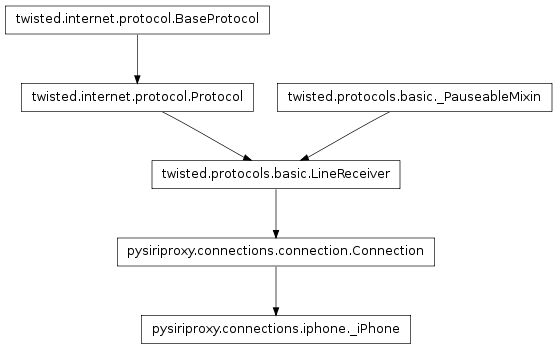
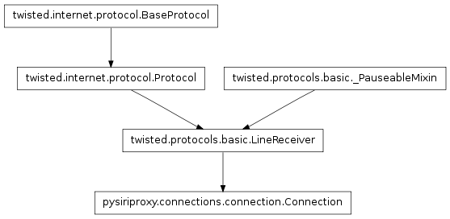

The iphone module contains the necessary classes for creating a concrete connection which is responsible for managing the connection between pysiriproxy and the iPhone.

The _iPhone class manages the SSL connection to Siri on the iPhone client. It processes requests from Siri and forwards them to Apple’s server, and then intercepts the response and provides the ability to inject custom responses.

The Connection class implements the base functionaltiy for creating a concrete twisted internet protocol which is able to receive data in the form of lines.
This base class implements the functionality of receiving data from the iPhone or from Apple’s web server. The iPhone Apple’s web server transmit plist objects which are compressed using zlib compression. This class implements the necessary functionality for receiving the data, and decompressing it to retrieve the plist object data that is being transmitted.
The Connection objects are connected to the connections.ConnectionManager which provides the ability for one Connection to forward data to another Connection.
Note
This class is intended to be subclassed to create a connection between two specific machines.
This function is called when a connection failed.
This function is called when a connection is lost.
This function is called when a connection is made.
Get the ConnectionManager object for this Connection.
Get the direction for this connection.
Get the current receiving mode the server is in.
Get the most recently used reference id.
Inject the given object into the output stream of this connection. This effectively sends the object to the foward destination connection for this connection.
This function is called when a line of data is received.
This function is called when raw data is received.
Reset this connection.
Set the server to receive lines.
Set the server to receive raw data.
Set the reference id.